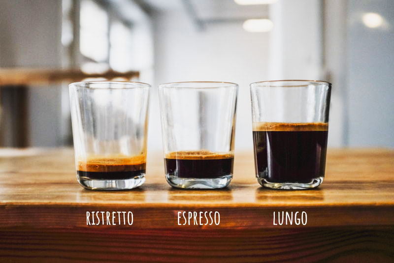

Эспрессо
Изначально, в зависимости от насыщенности порции эспрессо, различают ристрето, нормале и лунго – это относительные понятия, которые не имеют конкретных значений по соотношению закладки кофе к воде. На таких “коротких” дистанциях вкус очень сильно зависит от давления, времени экстракции и степени помола.
Виды кофейных напитков на основе эспрессо
Ристрето
Ристрето– эспрессо заваренный из того же количества кофе и за то же время экстракции, но с использованием вдвое меньшего количества воды. Для ристретто обычно используют более мелкий помол. Имеет более концентрированный вкус, но меньше содержание кофеина. Подается со стаканом воды.
Эспрессо
Эспрессо-напиток приготовленный с помощью рожковой эспрессо-машины. Принципиальные различия во вкусе достигаются благодаря более длительному времени экстракции, за которое в чашку (крое эфирных масел) попадает и большее количество кофеина.
Лунго
Лунго-похож на Американо по пропорции воды к кофе. Однако, этот объем воды используется при заваривании (пропускается через кофе), в противоположность Американо, где вода заливается в готовый эспрессо. Соответственно Лунго выходит меньше по объему чем Американо. Менее крепкий, чем доппио, но более крепкий по сравнению с эспрессо.